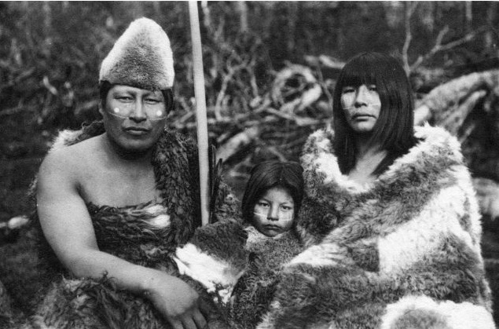
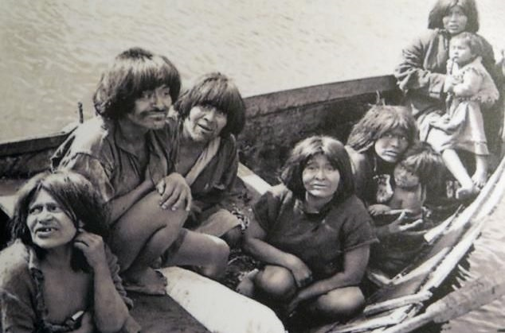
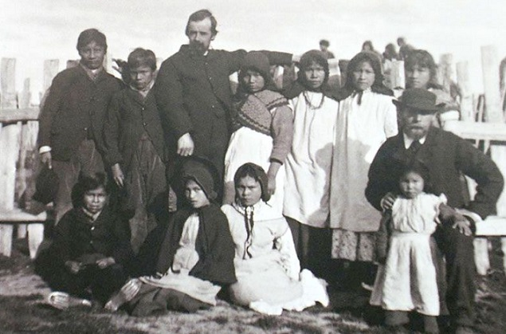
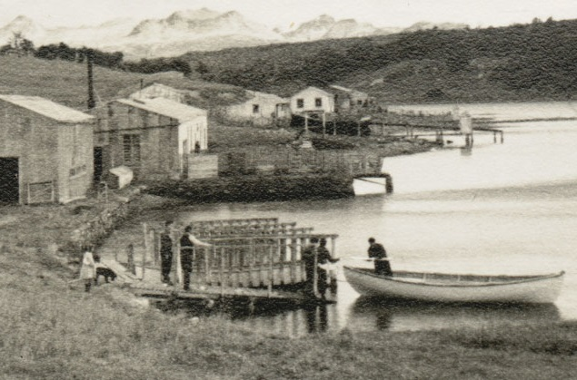
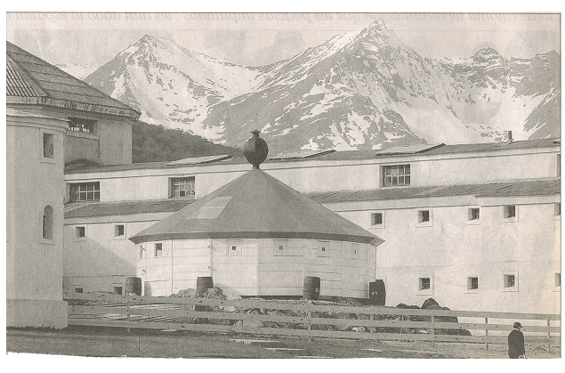
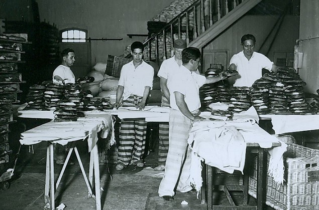

Primeros pobladores
Los primeros pobladores de estas tierras fueron cazadores y recolectores nómadas los que, hace más de 11 milenios, llegaron a pie desde el norte a lo que es hoy la isla Grande de Tierra del Fuego, territorio que aún estaba conectado a la Patagonia continental. De estos grupos, que estaban emparentados con los tehuelches del continente, surgieron los pueblos ona y haush. Desde los archipiélagos occidentales de la Patagonia llegó otra oleada de pobladores, los nómadas del mar, yámanas y kawésqar


La llegada de los blancos
El 18 de enero de 1869, con conocimiento de los gobiernos argentino y chileno, se estableció una misión anglicana encabezada por Waite Hockin Stirling, que formó el primer asentamiento no aborigen del archipiélago, muy próximo a lo que luego sería esta ciudad. Al año siguiente lo reemplazó Thomas Bridges.
El 28 de septiembre de 1884, con alrededor de trescientos habitantes, el comodoro Augusto Lasserre llegó al lugar con la «División Expedicionaria al Atlántico Sur» a bordo de la cañonera Paraná, después de haber pasado por la isla de los Estados, con un personal de ciento dos hombres.
El 12 de octubre de 1884, Laserre creó una subprefectura junto a la misión anglicana, izando en ella la bandera argentina. El objetivo de la misma era reafirmar la soberanía argentina en la zona, después del tratado Austral con Chile de 1881. El superintendente de la «Misión Sud Americana», reverendo Thomas Bridges, cuya firma figura entre muchas otras en el acta de establecimiento de la subprefectura marítima, recibió con agrado la presencia de la expedición argentina y lo mismo los demás misioneros, como los evangelizadores Robert W. Whaits y Juan Lawrence, encargado de la enseñanza, por lo que se le puede considerar el primer docente de Tierra del Fuego; quienes también firmaron el acta. Alejandro Virasoro y Calvo fue designado primer subprefecto; junto al cual permanecieron Pedro Reyes y Luis Fique, conocido en Ushuaia como «El Primer Argentino».
Entre los yámanas, habitantes originarios de la bahía, se mencionan a Jorge Okkoko, Jorge Lauaia, (yerno de Jemmy Button), Sisoi, Cushinjiz, Maracol y Clemente Wiyellin, quienes residían en la misión.
Otros presentes fueron los integrantes de las tripulaciones de las naves Paraná, Transporte Villarino, Comodoro Py y Patagonia, entre ellos el comandante Federico Spurr, quien hizo el primer contacto con los misioneros y el subteniente Esteban Deloqui, que en 1902 fue Gobernador del Territorio. De los integrantes de la subprefectura, los que se establecieron en Ushuaia fueron los marineros Antonio Isorna y José Rodríguez. El 25 de noviembre de 1884 se designa primer gobernador de Tierra del Fuego a Félix Paz.


La colonización penal
No hubo delineación de calles ni manzanas hasta 1894. El caserío en expansión se volvió un pintoresco pueblo multicolor. Ushuaia comenzó a ocupar un lugar entre los argentinos cuando comenzó, en 1896, la Colonización Penal, enviando allí a hombres y mujeres que debían cumplir penas de varios años. Este proyecto cambió rápidamente al producirse el hacinamiento en las cárceles dada la gran inmigración que recibía Buenos Aires. Así pasó a ser una cárcel para reincidentes en casillas de madera y chapa. En 1902 comienza la construcción en piedra y argamasa, por los propios penados, del edificio de cinco pabellones. Actualmente funcionan el Museo Marítimo y del Presidio de Ushuaia, el Museo Antártico José María Sobral, el Museo de Arte Marino Ushuaia (primer Museo de Arte de la Provincia, 2006) y la Galería de Arte del Museo Marítimo de Ushuaia (también la primera de la Provincia).
La misión anglicana cesó su tarea a finales del siglo XIX y las únicas actividades, fuera de un incipiente rubro comercial, eran las de los empleados del gobierno.
A medida que el hombre blanco avanzaba sobre el territorio del archipiélago, la vida de los originarios sufría graves perturbaciones. A la mortandad por exterminio directo (los estancieros los perseguían por cazar a sus ovejas) se le sumó el mucho más aniquilante efecto que las enfermedades infecciosas causaron en la población nativa, la cual no estaba imunizada naturalmente contra la mismas. Hacia 1930, habían desaparecido casi por completo los pueblos originarios de la región.
A inicios del siglo XX, en 1902, se construyó en las vecindades de la entonces aldea de Ushuaia el célebre presidio, el cual estuvo en servicio como cárcel hasta mediados del mismo siglo. Esta institución introdujo en la ciudad la construcción en mampostería y piedras, adoptadas por algunos vecinos en edificios que demuestran su durabilidad (actual Municipalidad y Museo del Fin del Mundo, ex Banco Nación construido en 1913), pero no se popularizó. En 1947, el presidio fue cerrado por orden del entonces presidente Perón, siendo Director del Servicio Penitenciario Federal Roberto Pettinato.
El edificio pasó a manos de la Armada Argentina y tras un tiempo de abandono, alberga en la actualidad al Museo Marítimo y del Presidio de Ushuaia.
Entre otras curiosidades, tal presidio contaba con la línea de ferrocarril más austral del mundo, que conducía a los penados desde el presidio a los campos de trabajo situados en lo que actualmente es el parque nacional Tierra del Fuego, lugar que había quedado afectado para instalar la Colonia Penal. En la actualidad tal línea férrea se ha reactivado con fines principalmente turísticos, conectando una terminal situada en el ingreso del parque nacional con una estación siete kilómetros más adelante.

